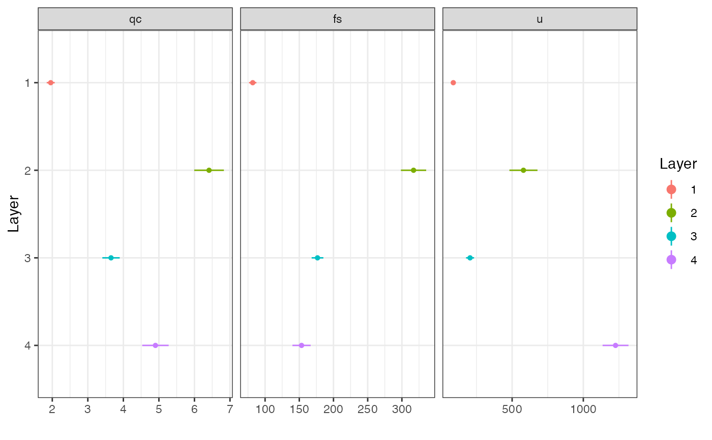

Performs multiple change-point analysis in univariate or multivariate data, to find layer boundaries in a perforation log.
mcp( data, R = 199, alpha = 2, sig.level = 0.01, min.perc = 15, conf.level = 0.95 )
Arguments
| data | A data frame containing the depth/distance in the first column, and the variables of interest in the rest of the columns, for a CPTu test: point resistance (qc), sleeve friction (fs), and pore-water pressure (u) |
|---|---|
| R | The number of random permutations |
| alpha | A parameter between 0 (exclusive) and 2 (inclusive). lower values make allow for more variation in the search for changepoints |
| sig.level | Significance level to determine significance of the changepoints |
| min.perc | Minimum percentage of data points per layer (between changepoints) |
| conf.level | Confidence level to use for plot and summary statistics (Default is 0.95) |
Value
ggplot and plotly objects showing the layer distinction, statistical summary of the layers, and a summary table
Details
The example data given is intended to show the structure needed for input data. The user should follow this structure, which in general corresponds with a data frame with a sequence in the first column and the observed/measured values in the rest of the columns
References
Nicholas A. James, David S. Matteson (2014). ecp: An R Package for Nonparametric Multiple Change Point Analysis of Multivariate Data, Journal of Statistical Software, 62(7), 1-25.
Examples
mcp(CPTu_data, R = 199, alpha = 2, sig.level = .01, min.perc = 15) # multivariate example#> $LayersGG#> #> $LayersLY #> #> $StatsGG#> #> $StatsLY #> #> $Summary #> Layer Interval Property Obs Mean SD Min Max CI.lwr #> 1 1 [0.12,3.74] qc 181 1.96 0.765 0.75 5.01 1.84 #> 2 1 [0.12,3.74] fs 181 81.90 36.900 0.53 166.00 76.50 #> 3 1 [0.12,3.74] u 181 86.90 94.200 -37.30 358.00 73.00 #> 4 2 (3.74,5.46] qc 86 6.41 1.940 2.69 10.60 5.99 #> 5 2 (3.74,5.46] fs 86 317.00 86.100 121.00 509.00 299.00 #> 6 2 (3.74,5.46] u 86 580.00 460.000 53.90 2040.00 481.00 #> 7 3 (5.46,8.1] qc 132 3.65 1.420 2.38 14.20 3.41 #> 8 3 (5.46,8.1] fs 132 177.00 49.800 56.00 271.00 168.00 #> 9 3 (5.46,8.1] u 132 205.00 164.000 -54.80 690.00 176.00 #> 10 4 (8.1,11.6] qc 174 4.90 2.480 2.68 22.60 4.53 #> 11 4 (8.1,11.6] fs 174 153.00 89.000 -22.20 467.00 140.00 #> 12 4 (8.1,11.6] u 174 1230.00 608.000 -31.80 2530.00 1140.00 #> CI.upr MoE #> 1 2.07 0.112 #> 2 87.40 5.410 #> 3 101.00 13.800 #> 4 6.83 0.416 #> 5 335.00 18.500 #> 6 678.00 98.600 #> 7 3.90 0.245 #> 8 185.00 8.570 #> 9 233.00 28.200 #> 10 5.27 0.371 #> 11 167.00 13.300 #> 12 1320.00 91.000 #> #> $ES #> [1] 0.405 #>mcp(DPM_data, R = 199, alpha = 2, sig.level = .01, min.perc = 15) # univariate example#> $LayersGG#> #> $LayersLY #> #> $StatsGG#> #> $StatsLY #> #> $Summary #> Layer Interval Property Obs Mean SD Min Max CI.lwr CI.upr MoE #> 1 1 [0,2.8] Blows 28 4.96 2.190 0 10 4.12 5.81 0.849 #> 2 2 (2.8,5.8] Blows 30 7.57 0.898 6 9 7.23 7.90 0.335 #> 3 3 (5.8,8.6] Blows 28 8.61 1.200 7 11 8.14 9.07 0.465 #> 4 4 (8.6,10] Blows 15 10.40 1.120 8 12 9.78 11.00 0.620 #> #> $ES #> [1] 0.62 #>